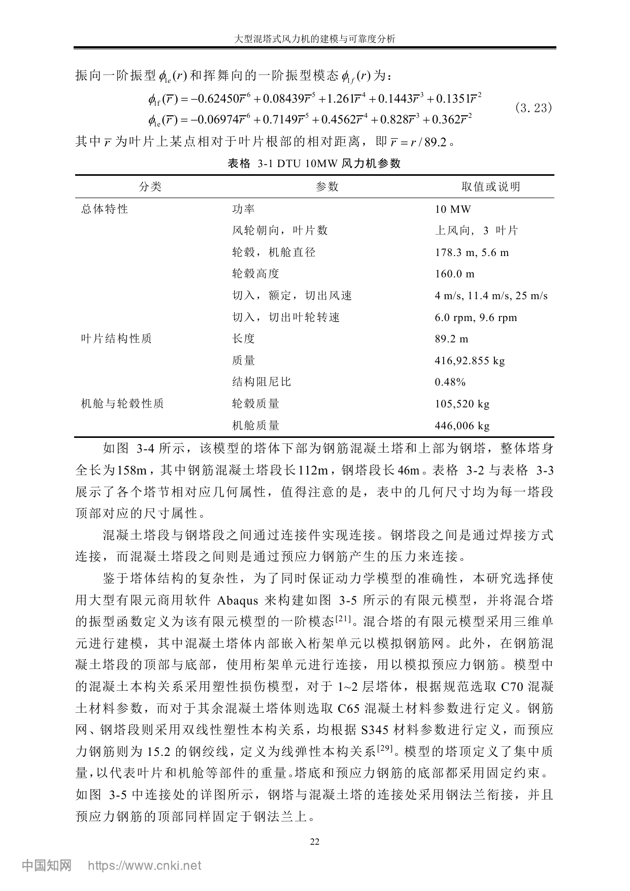

GOVERNMENT FILE · PDF嘉鱼县政府项目文件
湖北 · 咸宁 · 嘉鱼 WIND ENERGY / STRUCTURAL DYNAMICS

ORIGINAL SOURCES
嘉鱼项目与论文原件
SITE / ENVIRONMENT · PDF嘉鱼簰洲湾200MW项目环评

HE ZEYU · 2024何泽宇混合塔架论文原件
WORKSPACE
研究资源
16
13
09
04
DISCIPLINE DIRECTORY
研究专题
RESEARCH ROADMAP
研究路线
ORIGINAL RESEARCH FIGURES
科研原图
DATA & EVIDENCE
数据与研究成果
ACADEMIC REPORTS
研究报告与论文
PRIMARY SOURCE ARCHIVE
JIAYU / ENGINEERING / LITERATURE
541
原始文件与科研图集
原始 PDF · 论文页图 · 研究图表
ORIGINAL PROJECT DOCUMENTS
嘉鱼工程文件与何泽宇论文
HE ZEYU / ORIGINAL PAGES
何泽宇论文原始页图
COMPLETE SCIENTIFIC IMAGE ARCHIVE
原图直接展示 · 按需加载全部研究原图
RESEARCH DATA
文件资料
RESEARCH RECORDS